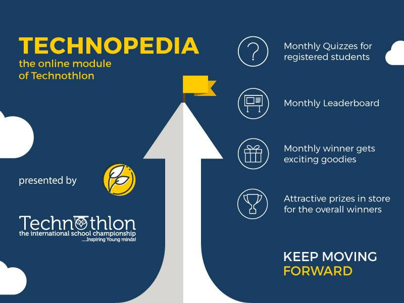

Technopedia is the online module of Technothlon providing its students with an ultimate experience of the prelims beforehand. With the monthly quizzes, Technopedia aims at keeping the young minds involved in brainstorming questions and helping them prepare for the prelims. Only the students who have registered for Technothlon may log into Technopedia using either their email id or their roll number and password.
